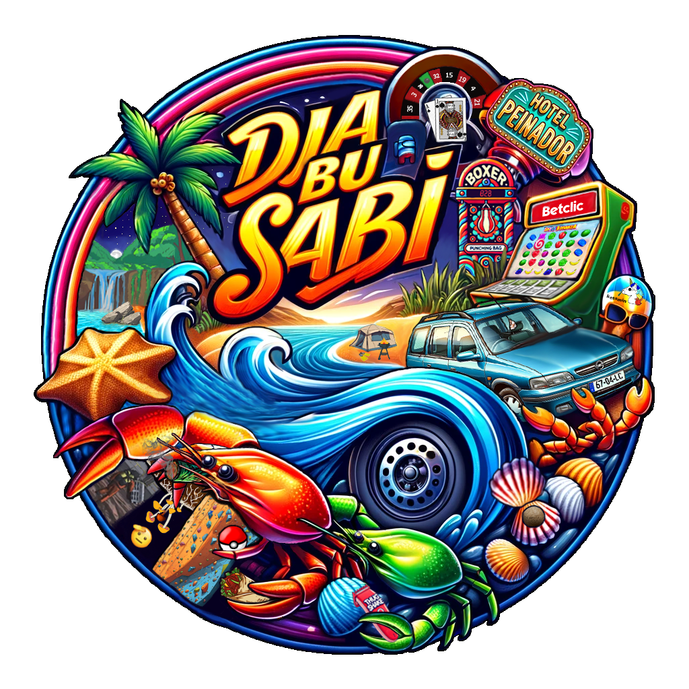

DBS Item ShopDBS Item Shop began as a university PHP storefront built around product browsing, authentication, account flows, and admin-oriented CRUD thinking. For this portfolio, it was rebuilt as a static HTML, CSS, and JavaScript experience so the project can be deployed directly on GitHub Pages while still communicating the original store structure and Djabusabi identity.
This page presents the original backend-oriented scope and the static rebuild side by side, so the project still reads like a real storefront system rather than a disconnected mock landing page.
Overview
The original DBS Item Shop was shaped like a proper course storefront: branded navigation, role-aware thinking, product listings, customer account management, and admin-side data operations. That structure is what gives the project value, so the rebuild focuses on preserving the product logic and experience framing, not just recreating a homepage.
Because GitHub Pages cannot run PHP sessions or database queries, the portfolio version keeps the visual language and user journeys while moving the deployable layer into static HTML, CSS, and JavaScript. The result is a cleaner, easier-to-open project page that still reads like the same DBS ecosystem.
Landing, store, login, signup, and account pages remain browseable.
Browse merchandise, create or enter an account, and manage profile details.
The demo catalog stays intentionally small and focused for static delivery.
No PHP runtime, no sessions, and no database setup are needed to open it.
Technical Stack
Server-side storefront built with course-project structure
- Authentication, sessions, and database-driven product flows.
- Role-based behavior with customer and admin responsibilities.
- CRUD mindset for users, products, and store management tasks.
- Structured file organization with reusable layout and navigation pieces.
Deployable front-end version designed for easy access
- Static HTML pages that open directly from the portfolio repository.
- Reused Djabusabi brand assets, dark surfaces, and storefront composition.
- Client-side catalog rendering, sorting, filters, and tabbed account presentation.
- Project storytelling that keeps the original backend scope visible and credible.
Problem to Rebuild to Result
The portfolio version is strongest when it explains not only what DBS looked like, but why a second implementation was needed and what that second implementation keeps alive.
The course project depended on a classic server-side stack. Once removed from that environment, the original deployment model could no longer show its navigation, forms, product browsing, and role-based logic directly inside the portfolio.
- PHP includes and server sessions do not run on GitHub Pages.
- Database queries cannot power live product or account state on a static host.
- The project risked being reduced to screenshots instead of an explorable demo.
Reframe the project as a static case-study experience: keep the same brand, store layout, fixed-header feel, filters, account pages, and practical UI blocks, then rebuild the portfolio-facing version with clean front-end code.
- Preserve the store-oriented information architecture.
- Highlight what belonged to the original backend and what belongs to the rebuild.
- Use the portfolio's existing cards, badges, glow, and CTA system throughout.
A more premium portfolio project page and a static demo that feel integrated with the rest of the website, while still reading unmistakably as DBS Item Shop and clearly respecting the original course-project scope.
- Sharper hierarchy, richer widgets, and stronger section transitions.
- Clearer separation between backend origin and static delivery model.
- Believable, portfolio-ready presentation without changing the product identity.
What the Static Version Preserves
The static rebuild is not trying to pretend the backend still exists. Its job is to preserve the product language, customer-facing structure, and key interaction cues that made the original project feel like a real item shop.
Fixed-Header Store Framing
The demo keeps the branded top navigation, strong route hierarchy, and store-first presentation style that defined the original browsing experience.
Filters and Ordering
Category selection, availability cues, and ordering controls remain part of the shop flow so the listing still feels practical and store-oriented instead of decorative.
Account-Side Structure
Login, signup, and account-management views still communicate the personal-data, password, and address-management scope from the original customer area.
Admin / CRUD Mindset
Even when not running from a live backend, the project page keeps the original admin story visible: product and user management were central to the course implementation.
Djabusabi Brand Personality
Dark surfaces, strong contrast, rounded geometry, and the original logo assets keep the page grounded in the same DBS visual identity instead of drifting into a generic case study.
Static-Friendly Delivery
The rebuild is lightweight, portable, and easy to open, which makes the project much easier to evaluate inside the portfolio without sacrificing the original concept.
Original Project Capabilities
The table below makes the separation explicit: what belonged to the original backend build, and how that same idea is now represented in the portfolio-friendly version.
| Capability | Original Backend Project | Portfolio Rebuild |
|---|---|---|
| Store navigation | Fixed-header routing and branded store structure across multiple pages. | Preserved visually with the same dark, structured storefront feel. |
| Catalog browsing | Database-backed products, category views, and store listings. | Static catalog cards with front-end filters and ordering controls. |
| User accounts | Authenticated profile, password, and address management flows. | Static account, login, and signup pages that preserve the UI and journey shape. |
| Admin tools | Role-aware management for users and products with CRUD logic. | Presented on this page as part of the original scope and reflected in the system narrative. |
| Data layer | Sessions plus server-side persistence and query-driven behavior. | Replaced by static pages and front-end state so the project stays deployable. |
Important distinction
The static rebuild preserves presentation, flows, and portfolio accessibility. The original course project is still the source of the server-side logic, CRUD behavior, and role-based backend scope referenced throughout this page.
Project Journey
DBS Item Shop works best as a short journey: first a course assignment, then a structured backend storefront, then a deployable static rebuild, and finally a stronger portfolio case study.
University brief
Build a branded item shop with the expected ecommerce foundations: user flows, catalog browsing, structured pages, and admin-oriented data management.
Backend storefront implementation
The project grows into a PHP-based store with navigation, authentication, role-sensitive behavior, and CRUD-minded organization around products and users.
Static migration for portfolio delivery
The store is re-expressed as static HTML, CSS, and JavaScript so it can be opened instantly from a repo or static host without server provisioning.
Premium portfolio presentation
The case-study page is upgraded to match the rest of the portfolio system with richer widgets, stronger hierarchy, and a clearer backend-versus-static narrative.
Live Static Demo
The embed below loads the GitHub Pages friendly version built in
partials/dbs-website. You can also jump directly into the main routes that carry
the store, account, and entry-flow presentation.
What this embed demonstrates
The live demo focuses on the navigable front-end experience and brand continuity. It is intentionally static-friendly, which is why the original backend logic is documented on this page rather than simulated as a fake server.
Project Links
Browse the static rebuild, open the key store routes, or head back to the wider project list.